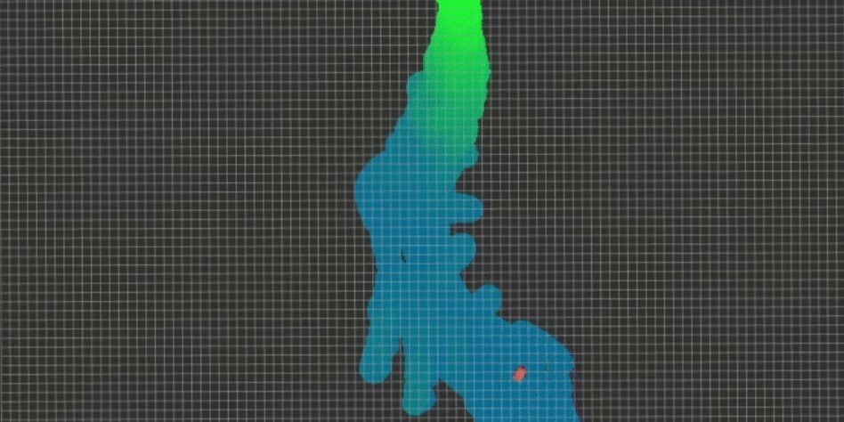

Learning-based Place Recognition for Multi-Modal Underwater SLAM
Place recognition and localization with vision, acoustic and magnetic sensors based on a neurobiologically inspired Bayesian framework.

Sensor Calibration and Alignment
Calibration of Intrinsic & Extrinsic Parameters, Observability Analysis.
Active SLAM
Leverage decision making and path planning to avoid featureless areas and reduce vehicle pose uncertainty.
AUV Homing and Docking
State estimation for AUV homing and docking by leveraging acoustic positioning and visual matching. Of particular concern is developing methods which are robust in the most challenging deep-sea environments.